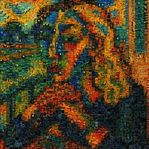

Mosayc#


Mosayc turns a main picture into a mosaic of smaller pictures.
Free software: MIT
Documentation: https://balouf.github.io/mosayc/.
Github: balouf/mosayc
Story#
A few years ago, I wanted to make a special gift for the birthday of my partner. A friend suggested to build a photo wall, but I recalled then that she liked jigsaws… So what about a personalized jigsaw?

The gift was appreciated! And a few years later, I decided to release the code I used. Enjoy!
Features#
There are already many tutorials to build a mosaic from a bunch of tile pictures, e.g. here or there (this is far from being exhaustive).
So… what makes Mosayc different? Mostly its use case: make a personalized memory-lane that you can offer as a gift (print as a poster, a jigsaw puzzle, use as screensaver of background…).
All proposals I found so far are based on finding the closest tile for each mixel (mosaic pixel). As a result, most of the time, you just use a small subset of your tiles (the ones with the good colors) that you copy many times. And you still have no guarantee that the colors will be right in the end. In contrast:
Mosayc leverages \(b\)-matching theory, a technique that ensures that all your tiles will occupy roughly the same number of mixels (and you control the redundancy): all your pictures will be included!
Mosayc can adjust the color of your tiles so they correspond to what you want (and you control the adjustment).
Mosayc can have tiles of different aspect ratios and orientations.
Mosayc can tilt the tiles so the result looks a bit homemade.
It’s packaged with a nice CLI, so you can make mosaics without worrying about the computation.
Quickstart#
Install Mosayc:#
$ pip install mosayc
Use Mosayc in a Python project:#
>>> from mosayc import Mosayc
>>> mosayc = Mosayc(input='mypicture.jpeg', tiles_dir='mydir')
>>> img = mosayc.compute()
Use the resulting Pillow image as you want!
Use Mosayc CLI:#
CLI help:
$ mosayc --help
Example:
$ mosayc -I myipcture.jpeg -D mydir -O mymosaic.jpeg
Credits#
This package was created with Cookiecutter and the Package Helper 3 project template.